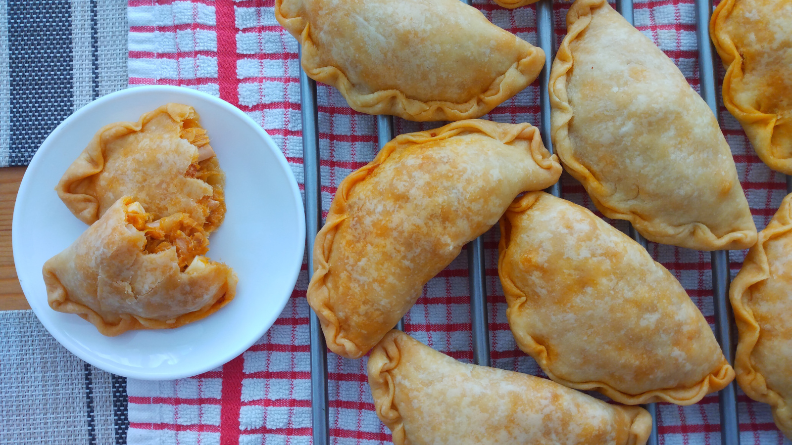

Empanadillas de Atún
- Preparación: 30 - 40 min
- Cocción: 40 min
- Porciones: 16 - 20 empanadillas
INGREDIENTES
RELLENO
- 1 cebolla grande picada
- 75 ml de salsa de tomate (ver mi receta aquí)
- 2 latas pequeñas de atún en aceite
- 2 cucharadas de harina
- 4 huevos cocidos picados
- sal y pimienta y un poco de agua
- hojuelas de chiles secos (opcional)
MASA
- 4 tazas (500 g) de harina de trigo de todo uso
- 175 ml de aceite vegetal
- 175 ml de leche ó agua
- ½ cucharadita de sal
- ½ cucharadita de azúcar
DESCRIPCIÓN
Deliciosas empanadillas, hechas con una masa suave tanto en textura como en sabor. El relleno de atún combina deliciosos sabores mediterráneos económicos y fáciles de conseguir. Son ideales para llevar a la oficina, al colegio, a un día de campo, etc. Combinan muy bien con una sopa o ensaldas, pues son muy versátiles.
INSTRUCCIONES
- Para preparar el relleno freír la cebolla en aceite de olivo. Cuando la cebolla comience a tornarse transparente agregar la salsa de tomate, sal y pimienta. Opcionalmente se pueden agregar hojuelas de chile seco en este punto. Sin dejar de remover añadir la harina y un poco de agua para que la mezcla espese. Retirar del fuego y agregar las dos latas de atún incluido el aceite y los huevos cocidos picados. Mezclar bien y rectificar el sabor de ser necesario.
- Para preparar la masa de las empanadillas, mezclar en un recipiente hondo la harina, sal, azúcar, agua (o leche) y aceite. Mezclar hasta obtener una masa suave. Si es necesario agregar más agua o más harina.
- Precalentar el horno a 170 °C (340 °F) y preparar una bandeja con papel para hornear. Dividir la masa en aproximadamente 20 trozos del mismo tamaño. Ir cubriendo con plástico para evitar que se resequen. Aplanar cada pedazo en forma de disco, de aproximadamente 2-3 mm de espesor. Colocar un poco del relleno de atún y cerrar la empanadilla en forma de media luna. Sellar los bordes con un tenedor o con los dedos. Ir distribuyendo las empanadillas en la bandeja para hornear dejando una separación entre ellas de 2-3 cm.
- Hornear las empanadillas durante 30 minutos o hasta que tengan un color ligeramente dorado. Sacar del horno, dejar enfriar y servir.
Notas
- Se puede sustituir la salsa de tomate por tomate frito o, inlcuso por tomates frescos picados (aproximadamente media taza). El resultado es ligeramente distinto, pero también muy recomendable.
- Sobra decir que la masa de estas empanadillas puede rellenarse con lo que más nos guste. A veces yo las relleno solamente con queso rallado, y quedan muy buenas. Otras combinaciones como: queso para untar con tomates secos, o una mezcla de verduras con tofu rallado, etc. son muy buenas alternativas.